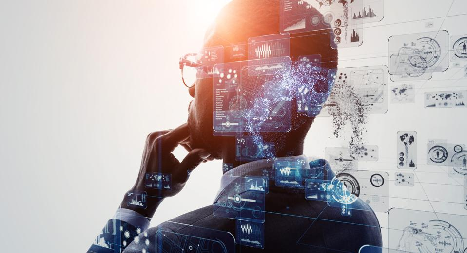

Future Impact of Artificial Intelligence

Future Impact of Artificial Intelligence
Rapid advances in artificial intelligence will result in a profound impact on productivity, employment, and competition. However, AI’s future integration into society is a controversial subject.
Impact on Productivity :
Increasing economic productivity leads to more satisfied customers and strengthened corporate profitability.
In the airline industry, AI will drive customer satisfaction through accurately scheduled and safer flights. Businesses that harness AI can improve their value proposition to customers while improving profitability at the same time.
For example, Delta Airlines leverages machine learning to provide its customers with superior flying experience. Delta analyzes Big Data to learn about aircraft positions, weather conditions, and aircraft diagnostics. Hypothetical outcomes and their probabilities are then identified. The airline then optimizes its flight scheduling with reference to the potential outcomes.
Impact on Employment :
Rapid expansion in the artificial intelligence field will result in more high-paying jobs, which, in turn, will require more highly-educated employees. The largest criticism of AI is that it will automate low-skill jobs and increase the unemployment rate for less-educated people.
Furthermore, low-skilled employees are more likely to be minorities, due to systematic discrimination. It is, therefore, argued that artificial intelligence can reinforce systematic discriminatory practices.
Impact on Competition :
Companies attempting to achieve a competitive advantage can leverage AI to optimize their business. Currently, only innovators and a few early adopters are integrating AI into their businesses. Once the economic benefit of AI integration outweighs the R&D and integration costs, more companies will adopt the new technology.
Assume a toy manufacturer decides to use machine learning to further optimize its supply chain. The manufacturer can take advantage of its lowered cost of goods sold and offer toys at a lower price point to capture market share. This demonstrates how AI can increase competitive behavior in the marketplace.